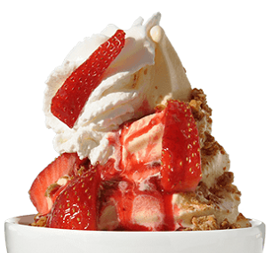

Blog
-

BERRIES ON THE GROVE
By Admin on March 10, 2018We’re always looking for tasty treats that will satisfy our sweet tooth (and hopefully yours too!) and that won’t wreak havoc on waistlines like many traditional sweets typically do.
Read More -
NEW CHILLS FOR SUMMER
By Admin on November 28, 2023They’re a great way to cool down on a warm afternoon, and the red, white and blue coloring make these berry bites a perfect dessert treat for Memorial Day and 4th of July, too!
Read More